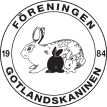

Föreningen Gotlandskaninen
{% if mode == "utdrag" %}Så här står det i Stamboken. Utdraget skickas inte in. Rätta i rapporten, i Stamboken Online eller på blanketten.
| Nummer | Namn | Kön | Född | Senast rapporterad | Senaste vikt |
|---|---|---|---|---|---|
| {{ r.number }} | {{ r.name or "" }} | {{ r.sex }} | {{ r.born or "" }} | {{ r.last_reported or "" }} | {{ r.weight if r.weight is not none else "" }} |
Inga kaniner.
{% endif %}| {{ s.number }} | {{ s.date }} |
Inga försäljningar under {{ year }} i Stamboken.
{% endif %}| {{ d.number }} | {{ d.date }} |
Inga döda.
{% endif %}| Datum | Kull | Mor | Far | Födda | Levande vid 6 veckor |
|---|---|---|---|---|---|
| {{ l.date }} | {{ l.number or "" }} | {{ l.mother or "" }} | {{ l.father or "" }} | {{ l.born if l.born is not none else "" }} | {{ l.alive if l.alive is not none else "" }} |
Inga kullar under {{ year }} i Stamboken.
{% endif %} {% else %}Årsrapporten kom in {{ received }}.
| Nummer | Val | Datum | Vikt | Hull |
|---|---|---|---|---|
| {{ r.number }} | {{ r.choice }} | {{ r.when or "" }} | {{ r.weight if r.weight is not none else "" }} | {{ r.hull or "" }} |
Inga kaniner.
{% endif %}{{ health }}
{% if diseases %}Defekter